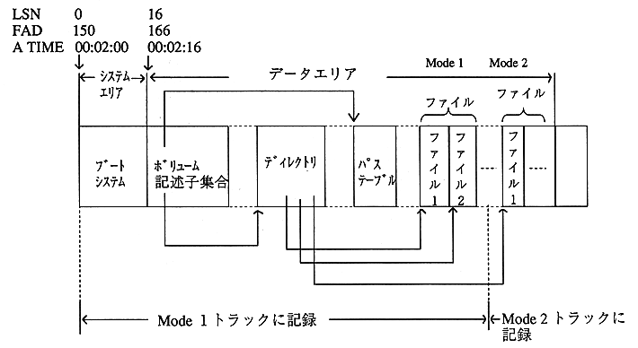

CD-ROM area and CD-ROM XA area consist of system area and data area.
The volume descriptor set, directory, and path table for describing the disk volume / file structure are recorded at the top of the data area. (Figure 3.1)
The system area, volume descriptor set, root directory, and path table must be recorded on the Mode1 track.

Figure 3.1 Overview of CD-ROM area and CD-ROM XA area